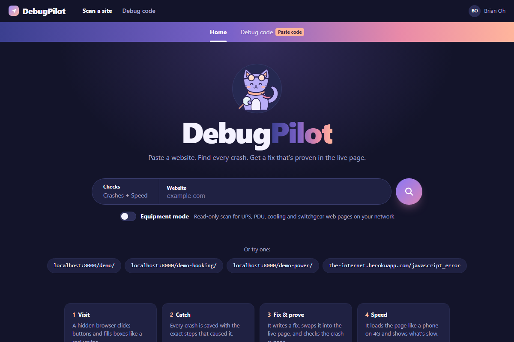
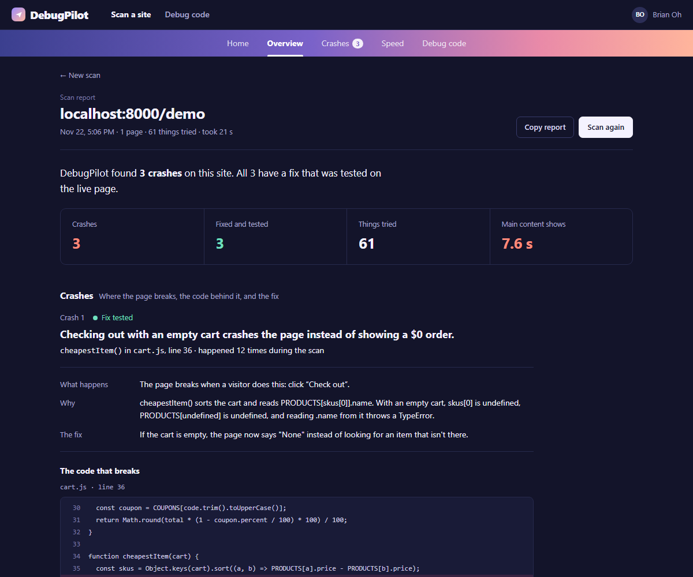
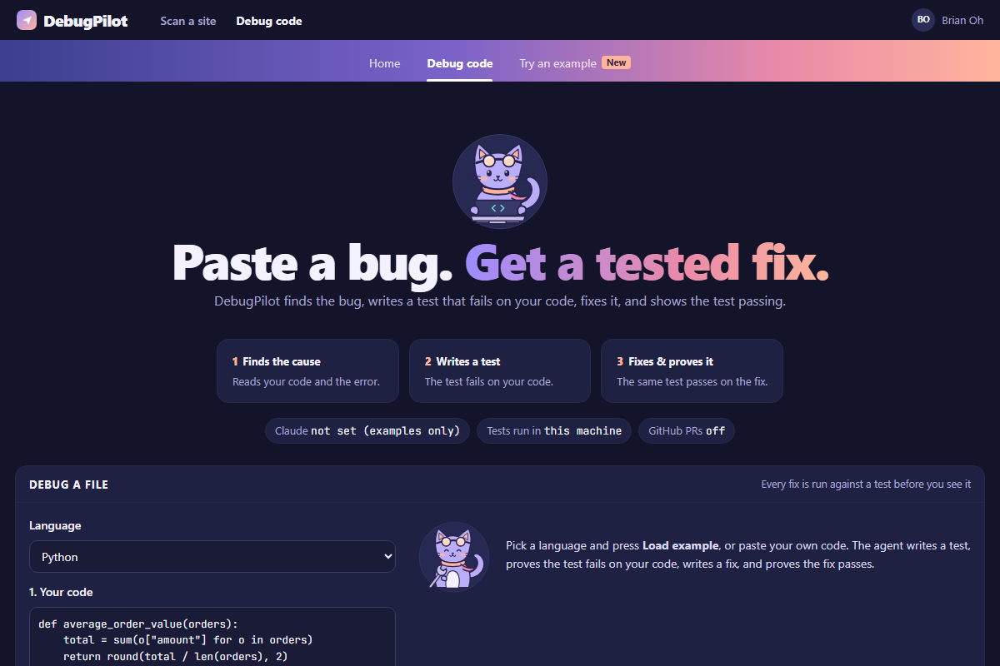

DebugPilot
DebugPilot finds mistakes (bugs) in code and websites, then fixes them. A person always checks the fix first.
Download for Windows See an example report See it on GitHubOpen in GitHub Codespaces (no download)
How it works
- 1. Look. It reads your code, or opens your website and clicks buttons like a real person.
- 2. Find a crash. If something breaks, it writes down the exact steps that broke it.
- 3. Make a fix. It writes a small change to solve the problem.
- 4. Check the fix. It repeats the same steps. If the crash is gone, the fix is marked tested.
- 5. You decide. It never changes anything by itself.
What it looks like
Scan a website. Type a web address and press the search button.

Read the report. It shows each crash, why it happened, and the fix.

Fix your own code. Paste code. It shows a test that fails, then a fix that passes.

Try it on Windows
- Install Python (version 3.10 or newer). Tick Add python.exe to PATH.
- Download DebugPilot and unzip it.
- Double-click
start.bat. The first time takes a few minutes. - Your browser opens. Click one of the "Or try one" links and press search.
The example sites are free to scan. Only scan websites you are allowed to test.
Add it to Chrome
Scan any page you are on with one click. Needs DebugPilot running on your computer.
- Open
chrome://extensionsin Chrome. - Turn on Developer mode (top right).
- Click Load unpacked and pick the
extensionfolder from the download. - On any site, click the DebugPilot button and choose Scan this page.